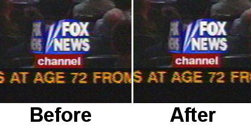

| [ << ] | [ >> ] | [Top] | [Contents] | [Index] | [ ? ] |
Atal honetan Cinelerra-ren erabilerarekin zerikusia duten arazo batzuk nola gainditzen diren azaltzen da. Arazoen eta gainditzeko erabilgarriak diren tresnen arabera dago ordenatuta.
Dolby pro logic modu erraz bat da 6 kanaletako audioa erreproduzitzeak 2 kanal bakarrik dituen soinu-txartel batekin, soinu piskat degradatuarekin baina hala ere erabilgarria. Dolby pro logic-en oinarrizko kodeketa lor daiteke efektuen erabilpen argia landuz.
Aurrenik, sortu aurreko ezkerreko eta eskuineko kanalak. Sortu audioaren bi pista, bakoitzak kanal hauetariko bat edukiko duelarik. Kokatu ezkerreko kanala ezkerrean, eta eskuineko kanala eskuinean, panoramikoa ikuspegiarekin.
Gero, sortu atzeko ezkerreko eta eskuineko kanalak. Sortu audioaren beste bi pista, aurrekoen antzera. Desplazatu ezkerreko kanala ezkerrera, eta eskuineko kanala eskuinera. Ondoren, aplikatu Alderantzikatu audioa efektua bi kanalei eta seinalea atzeko bozgorailuetatik etorriko da.
Jarraian, sortu zentruko kanala, audioaren pista bakarra sortuz soinu monofonikoarekin ("mono") iturburu desberdin batetik. Zentratu ezazu Panoramikoa ikuspegia erabiliz, seinalea bozgorailu zentraletik kaleratzeko.
Atzeko bozgorailuen seinalearen kopia bat aurreko bozgorailuan egotea nahi bada, atzeko bozgorailuen seinalea gutxienez 0.05 segundo atzeratu behar da, eta pista berri bakar bat sortu behar da. Erabili ikuspegi panoramikoa aurreko bozgorailuetako seinalea orientatzeko.
Seinale berdina edukitzea nahi bada bozgorailu guztientan, zentrukoa ezik, atzeko bozgorailuen soinua 0.5 segundo atzeratu, eta aurreko eskuineko edo ezkerreko bozgorailua 0.2 segundo atzeratu.
Maiztasun baxuko kanala (subwoofer) entzutea nahi baduzu, sortu pista berri bat, hautatu maiztasunen barruti bat, gehitu 'Sintetizatzailea' efektua eta doitu maiztasuna 60 Hz azpitik. Baxuen bozgorailuak normalean 60 Hz azpitik dauden soinuak soilik erreproduzitzen ditu.
Beste trikimailu bat bozgorailuak banatzeko ekualizazio parametrikoa erabiltzea da, bozgorailu bakoitzean maiztasun barruti zehatz bat erreproduzitzeko, eta behe-paseko iragazkiak erabiltzea baxuen bozgorailutik irtengo diren seinaleak hautatzeko.
Txina bezalako estatu aberats batean bizi edo bideo-artista izan ezik, litekeena da telebista modu analogikoan gehiago grabatzea digitalean baino. Telebista analogikoaren kalitatea txarra da, baina zerbait hobetu daiteke Cinelerra erabiliz, estudio batetik lortuko zatekeenaren itxura gehiago izateko.
Aurrenik, bideoa kapturatzean, saiatu ahalik eta bereizmen handienarekin kapturatzen. Europan 720x576 da, eta Amerikan 720x480. Ez saiatu monitorearen distira edo kontrastea doitzen, nahiz eta kolorea maximizatzea erabilgarria den. Kapturatu MJPEG erabiliz, edo konprimatu gabeko osagaien moduan, posible bada. Gehiegi eskatzea bada, kapturatu JPEG formatuan. GBU azken baliabide gisa soilik erabili.
Orain, denbora-lerroan, erabili Ezarpenak -> Formatua YUV kolore-espazioa ezartzeko. Gehitu Lagin-murrizketa efektua muntaiari, eta doitu honela:
Horizontala: 2
Despl. horizontala: 0
Bertikala: 2
Despl. bertikala: 0
gorria
x berdea
x urdina
alfa
Erabili kamera tresna filmea lerro bat gora edo behera eramateko, eta irudiaren kolore-interferentzia gehiena kentzeko. Bilatzen ari garen desberdintasuna hau da:

Hutsune bertikalari buruzko informazioa baduzu, edo fotograma bakoitzean konstanteki aldatzen diren ondulazioak, Maskara tresnarekin bloketau. Honek konpresioaren erlazioa hobetzen du.
Gutxi gorabehera hauxe da egin daitekeen guztia, konpresioarekin naturalki galduko liratekeen datuen baino gehiago suntsitu gabe. Teknika suntsitzaileagoek desgurutzelarkatzea daukate.
Bideoaren iturburu gehienak gurutzelarkatuak dira, eskaneatze progresiboko kamerak eta CRTak sortzea garestiegiak direlako. Kontsumitzaile bat baino gehiago sutu da 6 hilabetetako soldata kamera digital batean gastatu eta ordenagailuko monitorean irudiak zatarki desitxuratuta agertzen direlako.
Eskaneatze progresiboko kamerei buruz, hobeto ahatzea. Kostuen arazoak direla eta baliteke gurutzelarkatutako kameren bereizmen espaziala inoiz ez lortzea. Gurutzelarkatzea gure artean dago, eta bertan geratzeko asmoarekin gainera. Gutzi hau kontutan eduki zenez garatu zen desgurutzelarkatzea Cinelerra-n.
Ez dugu uste inoiz desgurutzelarkatzeko efektu perfekturik egon denik. Edo itzulbiderik gabekoak dira, edo ez dute funtzionatzen. Cinelerra-k tarteko erabakia hartu zuen: desgurutzelarkatzeko tresnak eskainitzen ditu, batzuetan itzulibiderik ez dute, eta beste batzuetan ez dute funtzionatzen, baina ez dira ez bata ez bestea.
Aukera bat dago lerroaren batez besteko moldaerantzako, batez besteko kalkulua aplikatuko zaien lerroak eta gurutzelarkatuta mantentzeko lerroak hautatzen ditu, lerroen arteko diferentzian oinarrituz. Ez du funtzionatzen.
Onena da aplikatutako efektua atzera itzuli daitekeela Eremuak fotogrametara
efektuarekin. 'Eremuak fotogrametara' efektuak gurutzelarkatutako jatorrizko
metrajearen bi fotograma konbinatzen ditu, fotograma-tasa erdiarekin erreproduzitzeko.
Ohartu zaitez 'Fotogramak eremuetara' efektuak sarrerako fotogramak abiadura
proiektuaren fotograma-tasaren erdiarekin irakurtzen dituela. 'Fotogramak eremuetara'
efektuaren aurretik dauden efektuek fotograma-tasa murriztuarekin prozesatzen dira.
Zoritxarrez, 'Fotogramak eremuetara' efektuaren irteera ezin da jatorrizkoak duen
eraginkortasunarekin konprimitu, 'twitter' (txio egitearen onomatopeia) bertikala
eta fotograma-tasa oso altuak sortzen dituelako.
29.97 f/s fotograma-tasarekin gurutzelarkatutako metrajea filmaren itxura har dezake Fotogramak eremuetara efektua aplikatuz, eta ondoren proiektuaren 59.94 f/s fotograma-tasatik 23.97 f/s fotograma-tasara murriztuz. Honek ez du denbora-jauzirik sortzen, eta ustegabeko eremu bakoitiak xehetasun gehiago izatearen hautamena ematen du jatorrizko lerroen batez bestekoa landuz lortuko zatekeena baino.
HDTV salbuespenak
Definizio altuko telebista, 1920x1080 HDTV, modu berezi batean kodetzen da. Jatorrizko
HDTV filmearen igorpena bada, 'Alderantzikatu Telezinema' efektuak ongi funtzionatzen
du. Baino igorpenaren jatorriz 720x480 bada, denbora-oinarriaren zuzenketa eta lerro
bikoizketaren algoritmoa erabili behar da desgurutzelarkatzeko. Irakurri
See section 1080-tik 480-ra atala.
Bideoaren kalitatea hobetuz doa egun batetik bestera. Bizi garen garaian, etxeko kamera digital merketik eskuratutako bideoa 24 f/s fotograma-tasa progresibora bihurtzea da egin daitekeen gauzarik hoberena. Benetan hau lortu ezin den arren, nahiko hurbil irits gaitezke. Kontu ibili beharra dago ordea, prozedura honek kalitate altuko bideoa degradatu dezakelako, kalitate baxuko bideoa hobetu dezakeen bezain erraz.
Prozedura oso hau efektu batean (ez zen denbora errealekoa izango) garatu daiteke, baina horrela egitearen arazo nagusiena honakoa da: erabiltzaileek eremuetan oinarritutako irteera eta 24 f/s mantentzea nahi izaten dute, etorkizunean erabiltzeko. Denbora errealekoa ez den efektu batek prozedura guzti hau beharko luke 24 f/s fotograma-tasako kopiarentzat. Oraindik eztabaidatzen dago.
Askotan gertatzen da behelainorekin argazkiak ateratzea, eta zeru urdina inoiz ez ikustea. Norbaitek egun batean zeru urdina kapturatzea lortzen badu ere, zeruertzaren argazkiek ia beti sakonera gehiago eduki lezakete. Horretarako erabiltzen da Gradientea efektua.
Jaregin 'Gradientea' efektua behelainoa duen pistaren gainean. Ezarri honako parametroak:
Garrantzitsua da kolorea 'urdina 0% alfa' balioarekin doitzea, nahi eta erabat gardena izan. Kanpoko alfaren kolorea barneko kolorearekin interpolatzen da. Hau gradientearen aplikazio orokorreko ezarpena da. Ilunabarreko eszena batzuk laranja edo marroia kolorearekin hobeto geratzen dira.
Honela sortu genituen tonuak Motorola V180 gailuarentzako, eta baliteke telefono mugikor berrietan ere funtzionatzea. Joan Fitxategia -> Kargatu fitxategiak menura, kargatu soinua duen fitxategi bat Ordeztu uneko proiektua txertatzeko estrategiarekin. Joan Ezarpenak -> Formatua menura, eta aldatu Kanalak 1 balioarekin, eta Lagin-tasa 16000 edo 22050 balioarekin.
Orain nabarmendu denbora-lerroko eskualde bat, edo gehitu sarrerako eta irteerako puntuak, politonua osatuko duen zatia zehazteko. Telefono mugikorraren soinu-kalitatea hobetzeko gehienezko anplitutea beharko duzu soinuaren hainbat zatitan. Saguaren eskuineko botoiarekin Audio 1 pistaren gainean klik egin, eta hautatu Erantsi efektua. Agertuko den elkarrizketa-koadroan hautatu Konpresorea efektua, eta egin klik Erantsi botoian.
Ziurtatu zaitez txertatzeko puntua edo nabarmendutako area Konpresorea efektuaren eskualdean dagoela. Saguaren eskuineko botoiarekin egin klik Audio 2 pistaren gainean eta hautatu Erantsi efektua. Hautatu Audio 1: Konpresora elementua eta egin klik Erantsi botoian. Audio 1 Konpresorea efektuko luparen gainean klik egin konpresorearen elkarrizketa-koadroa bistaratzeko..
Doitu honako parametroak:
Egin klik Garbitu botoian grafikoa garbitzeko. Saretaren areako edozein puntutan klik egin eta arrastatu puntu berria 0 Irteerara (Output), eta -50 Sarrerara (Input). Grafikoak honelakoa izan beharko luke:
Joan orain Fitxategia -> Errendatu menura. Idatzi irteerako mp3 fitxategiaren izena.
Ezarri formatua MPEG Audioa elementuarekin. Egin klik Audioaren  giltzaren gainean, eta ezarri Geruza eremua III balioarekin, eta Kbit segundoko:
eremua 24 edo 32 balioarekin. Aktibatu Errendatu audioko pistak eta desaktibatu
Errendatu bideoko pistak. Egin klik Ados botoiaren gainean fitxategia errendatzeko.
giltzaren gainean, eta ezarri Geruza eremua III balioarekin, eta Kbit segundoko:
eremua 24 edo 32 balioarekin. Aktibatu Errendatu audioko pistak eta desaktibatu
Errendatu bideoko pistak. Egin klik Ados botoiaren gainean fitxategia errendatzeko.
Emaitzeko `.mp3' fitxategia web zerbitzarira igo. Ondoren, telefonoaren nabigatzailearekin `.mp3' fitxategia URL horretatik deskagatu. Baliteke telefono batek deskargatu eta erabili dezakeen fitxategien tamaina mugatuta edukitzea.
Audioaren pista baten eskualde bat hautatu, nahi den pistaren grabazioa aktibatu, Audioa -> Errendatu efektua menura joan eta Tiratu denbora efektua aplikatzea bezain erraza dela dirudi audioa denboran luzatzea. Audioaren 3 efektu daude audioa denboran zehar luzatzeko: Tiratu denbora, Berriz lagindu eta Baliabidearen informazioaren elkarrizketa-koadroa.
Berriz lagindu efektuak Fourier-en transformatu azkar bat aplikatzen du tonua aldatu gabe iraupena aldatzen saiatzeko, baina honek distortsioak sortzen ditu audioan. Erabilgarria da denboran aldaketa nabarmenak egiteko, aldaketa nabarmena denean entzuleari distortsioak onargarriagoak gertatzen zaizkiolako.
Iraupen txikiagoko aldaketetan, %5 baino handiagoak ez, Berriz lagindu erabili behar da. Honek audioaren garaiera aldatzen du, eta egindako aldaketak nahiko txikiak badira, entzuleak ez ditu nabarmentzen. Laginketa berriro egitean ez da soinu distortsiorik sortzen, eta honela erabilgarriagoa da iraupen txikiko aldaketetan.
Iraupena piskat aldatzeko beste modua hau da: joan Baliabideak leihora, hautatu Multimedia (media) karpeta, saguaren eskuineko botoiarekin audioaren fitxategi batean klik egin eta Informazioa hautatu. Informazioaren elkarrizketa-koadroan ezarri lagin-tasa iraupena doitzeko. Metodo honek saguarekin audioaren pistaren eskuineko muga eskuinera edo ezkerrera arrastatzea eskatzen du, iraupenaren aldaketari egokitzeko.
Atal honetan monitorean agertzen dena bideo batean kapturatu eta Cinelerra-n nola editatu azaltzen da.
Aurrenik, bideoa xvidcap tresnarekin kapturatu. Tresna hau GNU/Linux
banaketetako biltegietan aurkitzen da, edo honako gunetik deskarga daiteke:
http://xvidcap.sourceforge.net
Esan bezala, aurrenik kapturatu bideoa
xvidcap --fps 10 --cap_geometry 1280x1024+0+0 --file "fitxategia1.mpeg"
--gui no --audio no
Ez ahaztu geometriaren aukera doitzea zure pantailaren tamainara egokitzeko. Ondoren,
lortu berri duzun `fitxategia1.mpeg' fitxategia bihurtu Cinelerra-k erabiltzen
duen mpeg formatura:
ffmpeg -r 10 -i fitxategia1.mpeg -s 1280x1024 -b 3000 -aspect 1.33 -r 25
fitxat2.mpeg
Orain fitxategi hori (fitxat2.mpg) Cinelerra-n karga dezakezu. Ziurtatu proiektuaren bideo-formatua ongi konfiguratzen duzula: tamaina, fotograma-tasa, aspektu-erlazioa.
Bideoa muntatzea amaitu ondoren, errendatu egin behar duzu. JPEG sekuentzia gisa errendatu. Sortuko diren JPEG fitxategiak karpeta berri baten gordetzea gomendatzen da, fitxategi berri asko sortuko baitira.
Ondoren, ireki kontsola bat eta kokatu zaitez karpeta horretan (cd
komandoa erabiliz). Kodetu jpeg fitxategiak honako komandoak erabiliz:
Aurreneko urratsa:
mencoder "mf://*.jpg" -mf fps=25 -oac pcm -sws 2 -vf
scale=1280:1024,hqdn3d=2:1:2 -ovc lavc -lavcopts
vcodec=mpeg4:vbitrate=800:aspect=4/3:vpass=1 -ofps 10 -of avi -o /dev/null
-ffourcc DIVX
Bigarren urratsa:
mencoder "mf://*.jpg" -mf fps=25 -oac pcm -sws 2 -vf
scale=1280:1024,hqdn3d=2:1:2 -ovc lavc -lavcopts
vcodec=mpeg4:vbitrate=800:aspect=4/3:vpass=2 -ofps 10 -of avi -o
../rendered_file.avi -ffourcc DIVX
Bideoa mpeg4 formatuan zuzenean errendatu dezakezu Cinelerra-tik, horrela egitea nahi izanez gero.
Oraingoz GNU/Linux sistemak ez du agintzen mahaigainetan, bai zerbitzarien arloan ordea. GNU/Linux-eko programa asko sareko aplikazioak dira, aurpegirik gabekoak, estrategikoki diseinatuak nolabait Microsoft-en zerbitzarien funtzionalitateei aurka egiteko, baina ez erabiltzailearekiko dagoen elkarreraginkortasunean pentsatuz. Erabiltzaile batek GNU/Linux sistemako hainbat parametro doitu ditzake odol garbiko abere baten antzeko portaera izateko mahaigaineko arloan.
Itzultzailearen oharra: arestiko paragrafo hori jatorrizko dokumentuak zuen. Gaur egun GNU/Linux sistemak ez dio inolako enbidiarik beste sistema eragileei mahaigainen arloan, eta ari da piskanaka zabaltzen bai etxeetan bai bulegoetan ere. Gainera eguneroko zereginetarako aplikazio ugari ditu.
Memoria asko duten sistemetan baliteke Cinelerra-k trukatzeko diskorik gabe (swap partizioa) hobeto funtzionatzea. Ordenagailuak 4 GB memoria RAM badu, litekeena da trukatzeko partiziorik gabe hobeto funtzionatzea. Memoria gutxi badu, 512 MB adibidez, trukatzeko partizioa mantendu beharko litzateke. Grabazio bat lantzea nahi baduzu, trukatzeko partizioa desaktibatu beharko zenuke. Honek badu bere zergatia: GNU/Linux sistemak dagoen memoriaren erdia bakarrik erabiltzea uzten du. Hortik aurrera orrialde libreak bilatzen hasten da trukatzeko, memoria askatu eta diskora sarbidetzeko cache gisa erabiltzeko. 4 GB memoria duen sistema batean, orrialdeen trukatzearen atzerapena 2 GB erabili ondoren hasten da nabarmentzen.
Orduan, honako galdera etortzen da burura: nola exekutatu GNU/Linux trukatzeko partiziorik
gabe. Teorian nahikoa izango litzateke honako komandoa exekutatzea:
swapoff -a
Zoritxarrez, trukatzeko partiziorik gabe 'kswapd' ataza begizta batean exekutatzen da
errendimenduaren %100 bereganatuz. Arazo hau saihesteko, editatu `linux/mm/vmscan.c'
fitxategia. Gehitu lerro bat return 0; dioena, honako lerroen aurretik:
/*
* Kswapd main loop.
*/
Gero, gorde fitxategia eta berkonpilatu nukleoa.
Denbora errealeko errendimendua handitzeko, GNU/Linux-en soinu-kontrolatzaile guztien audioaren bufferrak 128K-tik 64K-ra mugatu ziren. Audio eta bideoaren aldi bereko grabazioan, eta audioaren grabazio askotan, honek seinalearen galerak sortzen ditu. Adabakiak aplikatzea, latentzia baxua eta prozesuak lehentasunez lantzea lortzeko, audioaren grabazioaren arazo gehienak konpontzen ditu, baina ez du bideo eta audioa aldi bereko grabazioa hobetzen. Hori dela eta, nukleoa aldatu egin behar da.
Sistemako soinuaren bufferrak egokiak diren ikusteko, exekutatu ekartzen duen soinuaren probarako programa, audioa edo bideoa jadanik beste programa batekin erreproduzitzen ari ez dela ziurtatuz. Programa honek ahalik eta tamaina handienarekin ezartzen ditu bufferrak eta erakutsi egiten ditu. Guztirako Byte erabilgarriak 131072 azpitik egonez gero, kontrolatzailearen bufferrak handiagotu egin beharko dituzu. Kontrolatzaile gehienak desberdinak izan arren, oraingoz eraldaketa bat prestatu dugu horietariko batentzako.
Jarraian datorrena SoundBlaster Live kontrolatzailearen OSS bertsioari aplikatzen zaio. Soinu-txartel bakoitzak eta eratorritako soinuaren kontrolatzaile bakoitzak inplementazio desberdin bat duenez, beste soinu-txartelen kasuetan ikertu egin beharko duzu. Kasu honetan, editatu `linux/drivers/sound/emu10k1/audio.c' fitxategia.
Honakoa agertzen den lekuan
if (bufsize >= 0x10000)
honeki ordeztu:
if (bufsize > 0x40000)
Honakoa agertzen den lekuan
for (i = 0; i < 8; i++)
for (j = 0; j < 4; j++)
honekin ordeztu:
for (i = 0; i < 16; i++)
for (j = 0; j < 4; j++)
`linux/drivers/sound/emu10k1/hwaccess.h' fitxategian, honakoa agertzen den lekuan
#define MAXBUFSIZE 65536
honekin ordeztu:
#define MAXBUFSIZE 262144
Azkenik, `linux/drivers/sound/emu10k1/cardwi.h' fitxategian, hau aldatu
#define WAVEIN_MAXBUFSIZE 65536
honekin
#define WAVEIN_MAXBUFSIZE 262144
Gero, konpilatu berrirnire_gailuao nukleoaren moduluak.
Linux nukleoak memoriaren 32 MB soilik partekatzea uzten du lehenetsi gisa. Kopuru hau handiagotu beharra dago zerbait erabilgarria lantzeko. Abiaraztean, Cinelerra-k honako abisuarekin jakinaraziko du:
The following errors occurred: void MWindow::init_shm0: WARNING:/proc/sys/kernel/shmmax is 0x2000000, which is too low. Before running Cinelerra do the following as root: echo "0x7fffffff">/proc/sys/kernel/shmmax
Aldaketa betirako izateko, gehitu honako lerroa `/etc/sysctl.conf' fitxategian:
kernel/shmmax=0x7fffffff
Aurreneko aldian, ordenagailua berrabiarazi dezakezu, edo supererabiltzaile gisa honakoa exekutatu:
sysctl -p
GNU/Linux sistemako adituen artean komando oso ospetsua da, baina GNU/Linux banaketetan ez da
lehenetsi gisa erabiltzen.
hdparm -c3 -d1 -u1 -k1 /dev/hda
GNU/Linux sistemak eguneroko ataza batzuk lantzen ditu, hala nola eskuliburuen orrialdeak (man orrialdeak) konprimitzea. Normalean, aplikazio bat konpilatzen edo testu bat idazten ari bagara, ez dira antzematen atzeko planoan lantzen ari badira. Baina bideoa erreproduzitzen edo muntatzen ari garenean bai ordea, antzematen dira. Eragiketa hauek desgaitu daitezke `/etc/rc.d/init.d/anacron' fitxategia editatuz.
Horretarako, idatzi exit hitza # ikurrarekin hasten ez den
aurreneko lerroan. `/etc/rc.d/init.d/crond' fitxategian idatzi exit
hitza # ikurrarekin hasten ez den aurreneko lerroan. Gero, berrabiarazi
ordenagailua.
Aldaketa hauek egin ostean, ezin izango da at komandoa erabili,
gaur egun norbaitek erabiltzen al du komando hori?
Bideojokuetara aritzen diren erabiltzaileek bereizmen altuko saguak atsegin dituzte,
baina mota horretako saguekin denbora-lerroan edo bideoaren pantailan doitasunez posizio
batean kokatzea oso zaila izaten da. Bere garaian, XFree86 zerbitzari grafikoak
PS/2 saguaren sentikortasuna murriztea uzten zuen, xset m 1 1 bezalako
komandoak erabiliz, baina ez da horrelakorik gertatzen USB edo
KVM-etan.
USB motako sagu baten sentikortasuna murrizteko modu bat badago, baina nukleoaren iturburua editatzea eskatzen du. USB motako euskarria duela urteetatik garatuta egon arren, sagu mota horien nukleoaren iturburua behin eta berriro idazten da. Instrukzio hauek nukleoaren 2.6.12.3 bertsiorako dira baliozkoak. Editatu `/usr/src/linux/drivers/input/mousedev.c' fitxategia.
Honakoa dioen lerroaren ondoren
struct mousedev_hw_data {
idatzi
#define DOWNSAMPLE_N 100 #define DOWNSAMPLE_D 350 int x_accum, y_accum;}
Gero, honelako zerbait dioen atalean:
switch (code) {
case REL_X: mousedev->packet.dx += value; break;
case REL_Y: mousedev->packet.dy -= value; break;
case REL_WHEEL: mousedev->packet.dz -= value; break;
}
honekin ordeztu
switch (code) {
case REL_X:
mousedev->packet.x_accum += value * DOWNSAMPLE_N;
mousedev->packet.dx += (int)mousedev->packet.x_accum
/ (int)DOWNSAMPLE_D;
mousedev->packet.x_accum -=
((int)mousedev->packet.x_accum / (int)DOWNSAMPLE_D)
* (int)DOWNSAMPLE_D;
break;
case REL_Y:
mousedev->packet.y_accum += value * DOWNSAMPLE_N;
mousedev->packet.dy -= (int)mousedev->packet.y_accum
/ (int)DOWNSAMPLE_D;
mousedev->packet.y_accum -=
((int)mousedev->packet.y_accum
/ (int)DOWNSAMPLE_D) * (int)DOWNSAMPLE_D;
break;
case REL_WHEEL: mousedev->packet.dz -= value; break;
}
Aldatu DOWNSAMPLE_N-ren balioa saguaren sentikortasuna aldatzeko.
Lehenetsi gisa, XFree86 ez da oso azkarra izaten Cinelerra-ren pixmapak errendatze aurretatuarekin erakustean. X zerbitzaria gelditu egiten da interfazearen zerrendak marraztean. Sistemak XFree86 erabiltzen badu (egungo banaketa askok ez dute erabiltzen), arazo hau gainditzeko XFree86-ren konfigurazioko fitxategian lerro bat gehitu.
Section "Device" atalean, gehitu honako lerroa:
Option "XaaNoOffscreenPixmaps"
eta berrabiarazi zerbitzaria.
Monitorea automatikoki itzaltzea saihesteko, `/etc/X11/xinit/xinitrc' fitxategian idatzi
xset s off xset s noblank
aurreneko if instrukzioaren aurretik.
Windows sistemako teklei buruz, GNU/Linux-eko banaketa bat berak ere erabiltzen ez dituztenak, Alt teklaren funtzionalitatea edukitzea lor dezakezu. `/etc/X11/Xmodmap' fitxategian gehitu honakoa
keycode 115 = Hyper_L keycode 116 = Hyper_R add mod4 = Hyper_L add mod5 = Hyper_R
Leiho-kudeatzaile batek Windows-eko teklak Alt bezala onartzeko behar diren aldaketak nahiko konplexuak dira. FVWM kudeatzailearen kasuan editatu `/etc/X11/fvwm/system.fvwm2rc' fitxategia eta idatzi:
Mouse 0 T A move-and-raise-or-raiselower #Mouse 0 W M move Mouse 0 W 4 move Mouse 0 W 5 move Mouse 0 F A resize-or-raiselower Mouse 0 S A resize-or-raiselower
atal lehenetsiaren ordez mugitzeko eta tamainaz aldatzeko. Errendimendu onena FVWM leiho-kudeatzailearekin lortzen da. Beste leiho-kudeatzaileek bideoa moteltzen dutela dirudi, gertaera gehiegi atzitzen dutelako eta diseinuan ez direlako hain eraginkorrak.
Maiz gertatuko da bideoa disko oso handi eta garesti batean gordetzea, eta abioko
disko gogorraren desberdina izatea. Hori dela eta, disko gogor horretan EXT
fitxategi-sistema eskuz instalatu beharko duzu, mke2fs tresna erabiliz.
Fitxategi-sistema azkarrena honakoarekin lortzen da
mke2fs -i 65536 -b 4096 nire_gailua
tune2fs -r0 -c10000 nire_gailua
Honela konfiguratuta, fitxategi-sistemak ez du egunkaririk (journaling),
ahalik eta bloke gutxien gordetzen ditu fitxategi-izenekin erabiltzeko,
eta ahalik eta datu kopuru gehiena atzitzen du. Piska bat motelagoa den
fitxategi-sistema, baina argi indarra joan ondoren leheneratzeko egokiagoa dena,
lortzeko
mke2fs -j -i 65536 -b 4096 nire_gailua
tune2fs -r0 -c10000 nire_gailua
Konfigurazio honek egunkaria gehitzen du, idazketa piska bat motelduz, eta fitxategi-sistemaren egiaztaketak bizkortzen du.
ZORAN sarreretik grabatutako bideoa ez da lerrokatuta egoten, edo ez dago erabat eskuinera kodetuta. Portaera hau piskat zuzendu daiteke kontrolatzailearen iturburuko parametroak doituz.
`/usr/src/linux/drivers/media/video/zr36067.c' fitxategiko 623garren lerroaren inguruan definitutako egiturak eragiten dio lerrokadurari. NTSC moduarentzako gutxienez, kontrolatzailearen 2.4.20 bertsioa hobetu zatekeen honakoa
static struct tvnorm f60ccir601 = { 858, 720, 57, 788, 525, 480, 16 };
honeki aldatuz
static struct tvnorm f60ccir601 = { 858, 720, 57, 788, 525, 480, 17 };
`/usr/src/linux/drivers/media/video/bt819.c' fitxategiko 76garren lerroaren
inguruan lerrokadurari eta kodeketari eragiten dion egitura dago.
NTSC moduarentzat
{858 - 24, 2, 523, 1, 0x00f8, 0x0000},
honeki aldatu
{868 - 24, 2, 523, 1, 0x00f8, 0x0000},
Parametro hauek doitzea irudia zentrura gerturatzeko balio lezake, edo ez. Gehienetan kontrolatzailea blokeatu egiten da aurreneko fotograma kapturatu aurretik.
Berria 2.6.5 bertsioan:
2.6 bertsioko nukleotan, bideoaren azpisistema hutsetik berridatzi zen. ZORANen parametroak doitzeko, joan `drivers/media/video/zoran_card.c' fitxategira eta bilatu bertan honako lerroen antzekoa
static struct tvnorm f50sqpixel = { 944, 768, 83, 880, 625, 576, 16 };
static struct tvnorm f60sqpixel = { 780, 640, 51, 716, 525, 480, 12 };
static struct tvnorm f50ccir601 = { 864, 720, 75, 804, 625, 576, 18 };
static struct tvnorm f60ccir601 = { 858, 720, 57, 788, 525, 480, 16 };
static struct tvnorm f50ccir601_lml33 = { 864, 720, 75+34, 804, 625, 576, 18 };
static struct tvnorm f60ccir601_lml33 = { 858, 720, 57+34, 788, 525, 480, 16 };
/* The DC10 (57/16/50) uses VActive as HSync, so HStart must be 0 */
static struct tvnorm f50sqpixel_dc10 = { 944, 768, 0, 880, 625, 576, 0 };
static struct tvnorm f60sqpixel_dc10 = { 780, 640, 0, 716, 525, 480, 12 };
/* FIXME: I cannot swap U and V in saa7114, so i do one
* pixel left shift in zoran (75 -> 74)
* (Maxim Yevtyushkin <max@linuxmedialabs.com>) */
static struct tvnorm f50ccir601_lm33r10 = { 864, 720, 74+54, 804, 625, 576, 18 };
static struct tvnorm f60ccir601_lm33r10 = { 858, 720, 56+54, 788, 525, 480, 16 };
Badirudi, lerro horiek direla irudiaren posizioa kontrolaren arduradunak. Gutxienez LML33rentzako, f60ccir601_lml33-ren definizioak lortzen du:
static struct tvnorm f60ccir601_lml33 = { 858, 720, 67+34, 788, 525, 480, 13 };
Informazio hau behar da Cinelerra beste hizkuntza batera itzultzen laguntzea nahi baduzu. Irakurri See section Inguruneko aldagaiak atala Cinelerra zure hizkuntzean exekutatzeko.
Cinelerra honako hizkuntzetara itzulita dago:
Eguneratutako `.po' fitxategi bat sortzeko, Cinelerra-ren iturburuko
mezu berriekin, ./configure exekutatu ondoren:
cd po && make
Gero, zure helburuko hizkuntzako `po/' direktorioko `.po' fitxategia editatu, eta bidali diff fitxategia Cinelerra-CV proiektuko garatzaileei.
Itzulpen berria sortzeko, ./configure exekutatu ondoren
cd po && make
Gero, `po/' direktorioan dagoen `cinelerra.pot' fitxategia editatu, eta itzuli bertan agertzen diren mezuak. Aldatu fitxategiaren izena `(hizkuntza_kodea).po' eta gehitu hizkuntzari dagokion kodea `po/LINGUAS' fitxategiari. Azkenik, bidali diff fitxategia Cinelerra-CV proiektuko garatzaileei.
Cinelerra-ren gako-fotogramen funtzionalitate ahaltsuak, irudi finkoen panoramikoak eta zoomaren efektuak sortzea uzten du.
Ikus dezakezunez, kamera gako-fotograma batetik hurrengora leuntasunez mugituko da, Cinelerrak automatikoki doitzen baitu kameraren mugimendua marra zuzenen bidez puntu batetik bestera.
| [ << ] | [ >> ] | [Top] | [Contents] | [Index] | [ ? ] |
This document was generated by Raffaella Traniello on December, 31 2007 using texi2html 1.76.